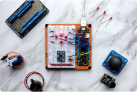
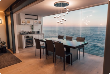

Angela
Balmond
Zilong

09 Jun 2023
Internet of Things (IoT) dan Masa Depan Keterhubungan dalam
Kehidupan Sehari-hari
Kristin Watson
02 Jun 2023
Mengembangkan Keterampilan Berpikir Kritis melalui Pendidikan:
Strategi dan Implementasi di Kelas
Cameron Williamson

15 Agu 2023
Inovasi Teknologi Big Data: Menggali Wawasan dan Mendukung
Pengambilan Keputusan yang Efektif
Arlene McCoy

27 Mar 2023
Desain Interior Ramah Lingkungan: Pendekatan Green Design dalam
Menciptakan Ruang yang Berkelanjutan
Chance Vaccaro
23 Jan 2023
Pendidikan Karakter: Membangun Nilai-Nilai Etika dan Moral pada
Anak-anak
Salma Cantika
11 Nov 2023
Peran Penting Kepercayaan Diri dalam Pengembangan Pribadi dan
Profesional
Lisa Blackpink
#1
27 Feb 2023
Mendekati AI yang Mampu Belajar Sendiri: Pengembangan Algoritma
Pembelajaran Mesin yang Efektif
Rochel Foose
#2
16 Des 2022
Perkembangan Terbaru dalam Teknologi 5G: Masa Depan Koneksi
Internet yang Lebih Cepat dan Andal
Cika Waode
#3
05 Jan 2023
Dampak Stres pada Kesehatan Mental dan Strategi Mengelolanya
dalam Kehidupan Sehari-hari
Uzumaki Narto